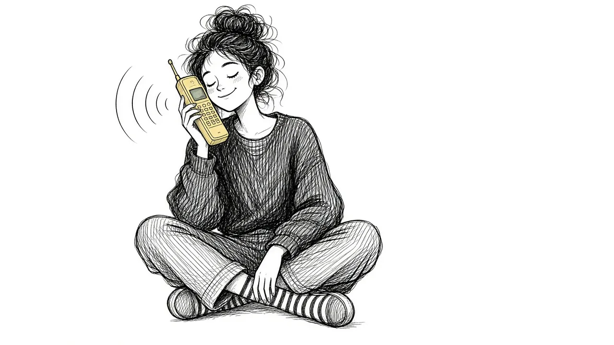

Checking Their Phone, Keeping Their Voicemail: Grief Habits and What They Mean

You call their voicemail just to hear their voice. You sleep with their shirt. You keep their room exactly as it was. Many grieving people have habits like these and wonder whether they are healthy.
Most of these habits are normal
Keeping connection to someone through objects, voices, and routines is a very human response to loss. These habits are often forms of continuing bonds, and many people find them comforting.
When habits help
- They bring comfort or a sense of closeness
- You can choose when to do them
- They coexist with engaging in daily life
- They feel like connection rather than compulsion
When habits may be holding you back
- You feel intense anxiety if you cannot do them
- They take up large amounts of time
- They prevent you from engaging with others or your own life
- They feed a belief that the person is not really gone
Adjusting gently
If a habit feels stuck, you do not have to stop abruptly. You might reduce frequency, change the form, or pair it with something new. For example, instead of calling their voicemail daily, you might save it and listen on meaningful days, or write them a message instead.
Turning habits into rituals
Many grief habits can become intentional rituals, chosen and meaningful rather than driven by panic. That shift often makes them more comforting.
Talk it through
If you are unsure whether a habit is helping, a grief counselor can help you explore it. If habits are tied to feeling you cannot live without them, call or text 988.
This article is for general information and support. It is not medical or mental health advice. If grief has become unbearable or you are thinking about harming yourself, call or text 988 right now.
Related reading

Acceptance and Remembrance: Two Ideas That Shape Healthy Grief
How acceptance and remembrance work together to help people carry grief while staying connected to the person they lost.

Coping With Grief: A Practical Guide
Practical, everyday ways to cope with grief, from the first days through the months and years that follow.

Self-Compassion in Grief
Grieving people are often harsh with themselves. How self-compassion can ease guilt and help you carry loss.